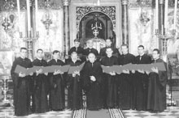

Επιρροές της Ελληνικής Βυζαντινής Χορωδίας σε άλλες χορωδίες / The influence of the Greek Byzantine
Choir on other choirs
Μιμητές του παραδείγματος της χορωδίας / Following the example of the
choir

There is a special tribute
page on the Greek Byzantine Choir on the Analogion. This page here, studies the influences of the
style of Lykoyrgos Angelopoulos (and ultimately Simon Karas) and the Greek Byzantine
Choir to other choirs in Greece and around the world.
The style of the EBX originates from the
Choir of the Association
for the Dissemination of National Music
(Χορωδία του Συλλόγου προς Διάδοσιν της Εθνικής Μουσικής)
directed by Simon Karas
Here is a sample:
Doxastikon of Christmas "Augoustou Monarchesantos"
(text and music written by nun Kassiani in the Byzantine times, transcribed by Karas
from the old method?)
[
asx] (from ecclesia.gr)
The following choirs are close in style to the EBX often because they are directed
by students of Simon Karas or Lykoyrgos Angelopoulos. Some people think that imitating
the Greek Byzantine Choir is a good thing, others don't. It is a controversial issue.
Here are some examples:
Orthodox Hellenic Byzantine Choir (Ορθόδοξη Ελληνική Βυζαντινή Χορωδία,
ΟΕΒΧ)
directed by Michalis Makris, student of Lykourgos Angelopoulos and former member
of the EBX.
The following sample tracks are from EBX's and OEBX's Christmas CDs respectively.
Please buy the CDs to support the work of both choirs. If I recall correctly, EBX's
CD was published in the early 80s whereas OEBX's CD was published in the late 90s.
Note that the style of the EBX has undergone significant change in the past 20 years
so these recordings of the EBX are quite different than their more recent ones.
Polyeleos of the Archangels in Plagal First Mode by Maistor Ioannis Koukouzelis:
EBX [
mp3, 1.7 Mb] and the same by the OEBX [
wma,]
Kratema in First Mode by Ioannis Protopsaltis: EBX [
mp3, 1 Mb] and the same by the OEBX [
wma, ]
Kathisma of Christmas "Deute Idomen Pistoi" traditional Prosomoion melody: EBX [
mp3, 360 Kb] and the same by the OEBX [
wma,
] (from ecclesia.gr)
Here is one more piece by the OEBX (from
ecclesia.gr).
Koinonikon "O poiwn tous Angelous" [
wma]
And there are many more in the various Comparison pages of Analogion.
Choir "Kalophonarides" (Χορωδία "Καλοφωνάρηδες")
directed by Georgios Remoundos, student of Lykourgos Angelopoulos.
The following pieces are from
ecclesia.gr)
Aineite (by Iakovos Protopsaltis) [
asf]
Alleluarion (composed by Simon Karas) [
asf]
Romeiko Ensemble (Χορωδία "Ρωμέικο")
directed by Yorgos Bilalis, student of Lykourgos Angelopoulos and former member of the
EBX
Maria (verse from Theotoke Parthene of P. Bereketis)
[
wma] (from
axionestin.org)
Choir "Cappella Romana" (Χορωδία Καπέλα Ρομάνα)
directed by Alexander Lingas, student of L. Angelopoulos.
St. Basil Apolytikion
Trisagion
Troparia for the
Blessing of the Waters
Choir "Byzantion" (Romanian choir) (Χορωδία Βυζάντιον)
directed by [pending]
(
official site of the choir)
Lots of recordings of the choir [
html]
(from
resurse-ortodoxe.com)
Choir of fathers of the Vatopedi Monastery, Mt Athos (Χορωδία Πατέρων
Ι. Μ. Μ. Βατοπεδίου, Αγ. Όρους)
directed by Konstantinos Angelidis, student of Lykourgos Angelopoulos and member
of the EBX.
All tracks from their Holy Saturday CD
[
html]
Choir "Tropos" (Χορός ψαλτών "Τρόπος")
directed by Konstantinos Angelidis, student of Lykourgos Angelopoulos and member
of the EBX.
Choir "Hagiopolites" (Χορωδία "Αγιοπολίτης")
directed by Ioannis Arvanitis, student of Simon Karas.
Byzantine Katavasiai of the Resurrection (transcribed from the old notation by I.
Arvanitis from a manuscript of the 13th cent)
[
mp3, 387 Kb]
(broadcasted by L. Angelopoulos and K. Angelidis on Greek radio)
Byzantine Choir of the Municipality of Paiania, Athens (Χορωδία Δήμου
Παιανίας)
directed by Konstantinos Markos, student of Simon Karas
Katavasiai of the Theofaneia by Panagiotis Chrysaphes (transcribed from the
old notation by Konstantinos Markos)
[
mp3, 635 Kb]
(broadcasted by Lykourgos Angelopoulos and Konstantinos Angelidis on Greek radio,
low sound quality)
Extract from a CD published by the choir in 2004.
Melodountes Choir (Χορωδία "Μελωδούντες")
directed by Konstantinos Bilalis, student of Simon Karas.
Katavasiai "Anastaseos Emera" (by G. Raidestinos) [
wma]
9th Ode of Easter (by G. Raidestinos) [
wma]
Christos Anesti (by G. Raidestinos) [
wma]
Choir "Agios Niketas o Neos" (Χορωδία "Άγιος Νικήτας ο Νέος")
directed by Ioannis Papachronis, student of Lykourgos Angelopoulos?
[
html]
Musical Ensemble "Simon Karas"
directed by Tasos Fotopoulos, student of S. Karas?
Recordings can be bought here [
html]
A CD of Tasos Fotopoulos can be bought here [
html]
Choir "Moisey Petrovich" (Serbian)
directed by [pending]
Recordings of the choir can be found in their home page [
html]
Kovilj monastery choir (Serbian)
directed by [pending]
Recordings of the choir can be found in their home page [
html]
Choir of Agrinion
directed by Andreas Lanaras, student of Lykourgos Angelopoulos and member of the
EBX.
Choir "Maistores" (Χορωδία Μαίστορες)
directed by Prof. Gregorios Stathis
Maistores have imitated the EBX in doing the ancient (long) apechemata of the modes, in doing an entrance/exit hymn in their concerts, in placing the director in the middle of the choir and other respects.